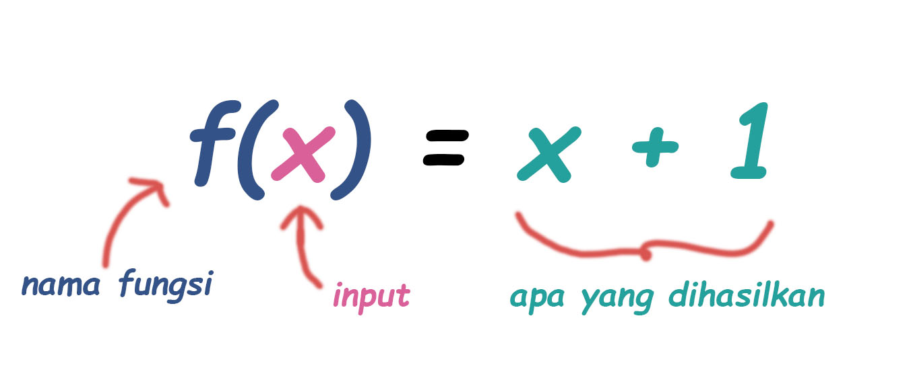

Fungsi itu seperti mesin yang memproses masukan menjadi keluaran.
Keluaran atau hasil dari fungsi memiliki hubungan dengan masukan.
Fungsi itu seperti mesin yang memproses masukan menjadi keluaran.
Keluaran atau hasil dari fungsi memiliki hubungan dengan masukan.
"f(x) = ... " adalah cara notasi yang paling sering dipakai.
Masih ada cara yang lain, nanti kamu akan lihat!
Ada banyak cara untuk memandang fungsi, tapi yang jelas fungsi memiliki 3 bagian :
| Input | Relasi | Output |
|---|---|---|
| 0 | x2 | 0 |
| 1 | x2 | 2 |
| 2 | x2 | 4 |
| 6 | x2 | 12 |
| 9 | x2 | 18 |
| ... | ... | ... |
Sekarang berapakan outputnya jika inputnya adalah 20?
Terkadang, suatu fungsi memiliki nama
Nama yang sering dipakai adalah "f", tapi kita bisa beri nama lain seperti "g" ... atau bahkan "inifungsi" jika kita mau.
Tapi disini kita pakai saja "f":
dibaca “f x sama dengan x tambah 1”
misalkan ada fungsi seperti ini :
misalkan inputnya 4, maka semua x diganti menjadi 4
lalu dioperasikan seperti biasa
dengan begitu, hasil dari f(4) adalah 20.
Kamu bisa mencoba membuat grafik fungsi sendiri disini
Petunjuk: jika kalian mau menggambar fungsi f(x) = 4x +5, maka kalian tuliskan 4*x+5 (harus pake tanda asterisk)